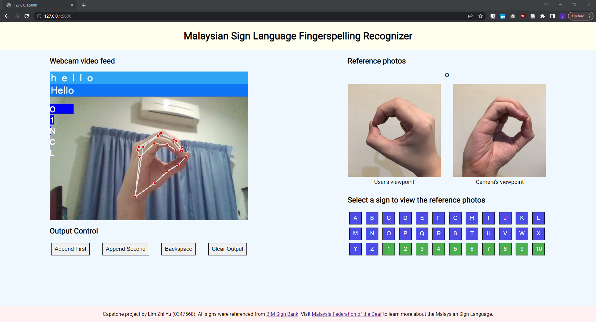
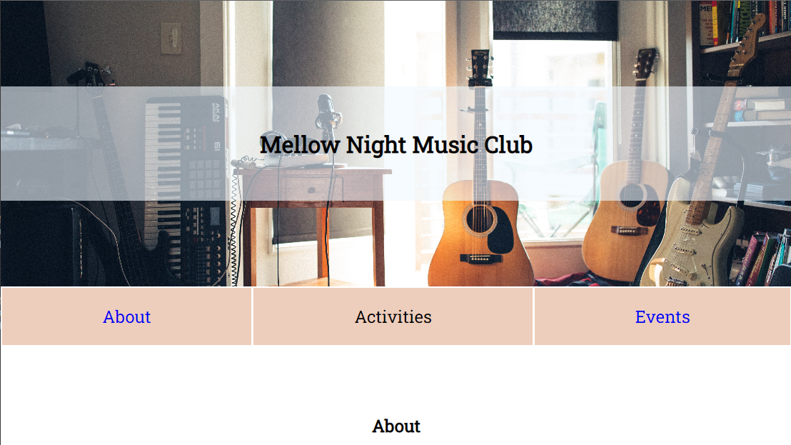
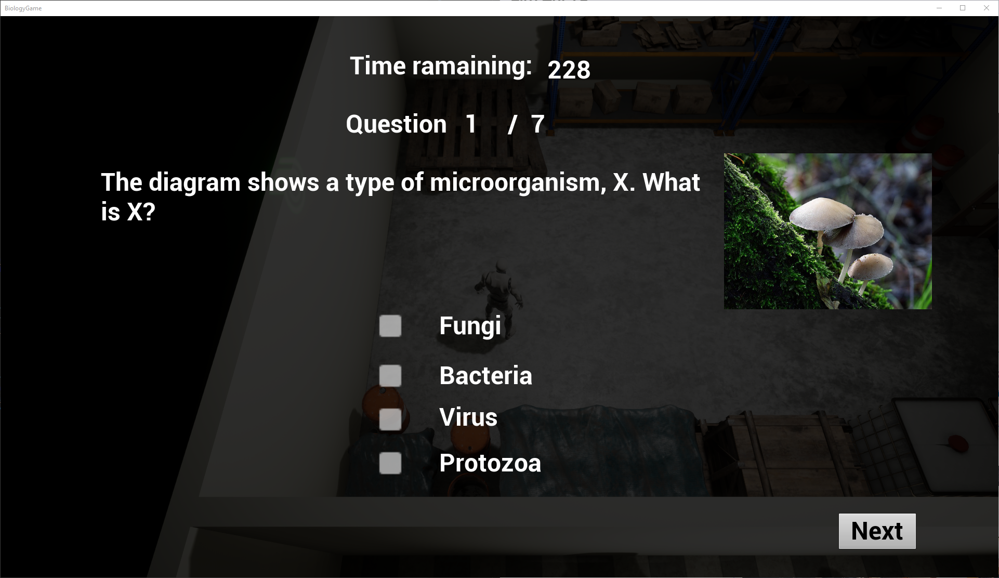

My Projects
Malaysian Sign Language Fingerspelling Recognition
My Applied Computing Capstone Project (master's degree). Machine learning is used to recognize Malaysian Sign Language fingerspelling in real-time.
Responsive Club Website
A Codecademy challenge project that uses media queries and responsive units to build a responsive webpage that fits different screen sizes.
Educational Video Game
My Computer Science Final Year Project (bachelor's degree). It's an educational video game that teaches the player biology knowledge through gamification.
Download(password: biologygame)